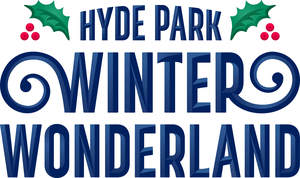
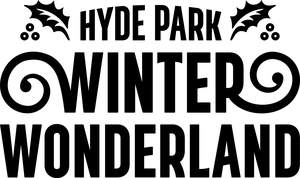

Trade Mark Journal No.2025/016 18 April 2025
UK00004182723 1 April 2025 (21,25,28,35,41,43)
Mark 1

Mark 2

Mark 3
Mark 4
- Class 21
- Household or kitchen utensils and containers; tableware, cookware and containers; bakeware; crockery; combs and sponges; brushes; cosmetic, hygiene and beauty care utensils; glassware, porcelain and earthenware; works of art of porcelain, ceramic, earthenware or glass; china ornaments; crystal glassware; drinking vessels; tankards, beer mugs; bottles; flasks; reusable cups and mugs; carafes, decanters; corkscrews, bottle openers; picnic baskets; storage jars; pet feeding bowls; bird feeders; gardening articles; gardening gloves; ice buckets; ice cube moulds; lunch boxes; coin banks; air fragrancing apparatus.
- Class 25
- Clothing; footwear; headgear; uniforms; articles of outer clothing; sweatshirts; sweaters; hooded sweatshirts; jumpers; fleeces; T-shirts; waterproof clothing; ponchos; ties; scarves, snoods, stoles; hats, baseball caps, beanies; socks; gloves, mittens, muffs; earmuffs.
- Class 28
- Games, toys and playthings; gymnastic and sporting articles; decorations for Christmas trees; festive decorations; plush toys, teddy bears, cuddly toys; balloons; toy LED light sticks; toy LED windmills; toy glow sticks; toy windmills; bathtub toys; playing cards; toy vehicles; dolls; model kits; commemorative models; jigsaw puzzles; board games; chew toys for animals.
- Class 35
- Advertising; marketing services; promotional services; advertising and promotion of goods and services available by electronic mail order and the Internet; retail services relating to the sale of paper and cardboard goods, printed material, stationery items, books, magazines, photographs, photograph albums, bags, umbrellas, animal apparel, housewares, clothing, footwear, headgear, clothing accessories, games, toys, playthings, food and drink products, ornaments and festive decorations.
- Class 41
- Entertainment, sporting and cultural activities; entertainment services; arranging, organising, hosting and management of entertainment events, tournaments and competitions; arranging, organising and hosting of events for cultural and entertainment purposes; production of live entertainment shows and performances; providing online electronic publications; online ticket and entry services for events, tournaments or competitions; publication of printed commemorative images, videos and memorabilia of an event, tournament or competition; electronic publication of commemorative images and videos of an event, tournament or competition; live entertainment; interactive entertainment services; funfair services; amusement park and theme park services; providing amusement park facilities; fun park services.
- Class 43
- Services for providing food and drink; bar services; café services; cafeteria services; bistro services; brasserie services; restaurant services; fast-food restaurant services; coffee shop services; catering services; contract food services; food preparation services; take-away food services; advisory, consultancy and information services relating to the aforesaid services.
The Royal Parks Limited
Representative: Brabners LLP